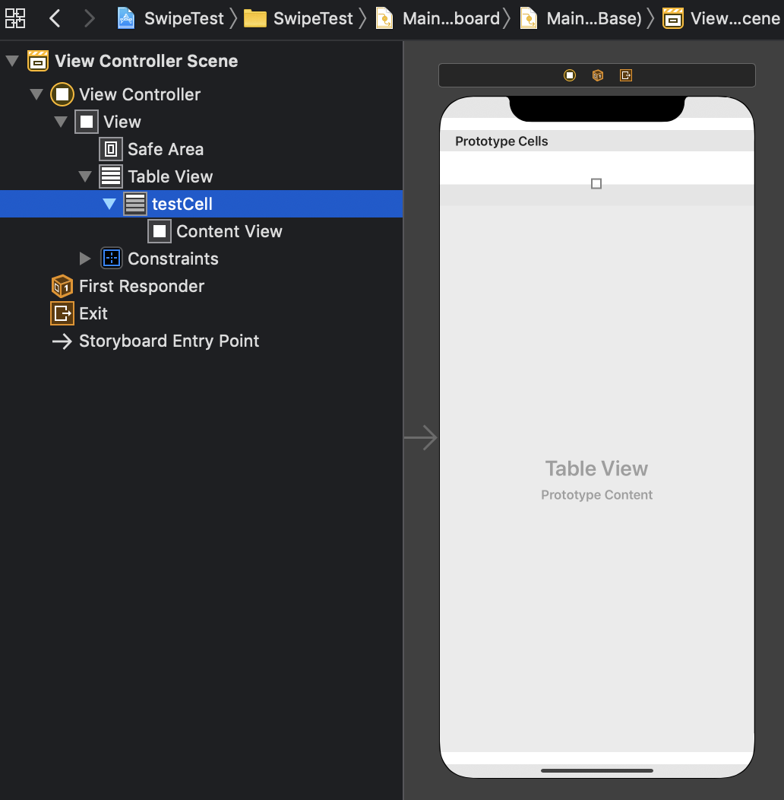
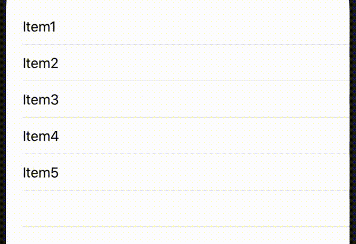
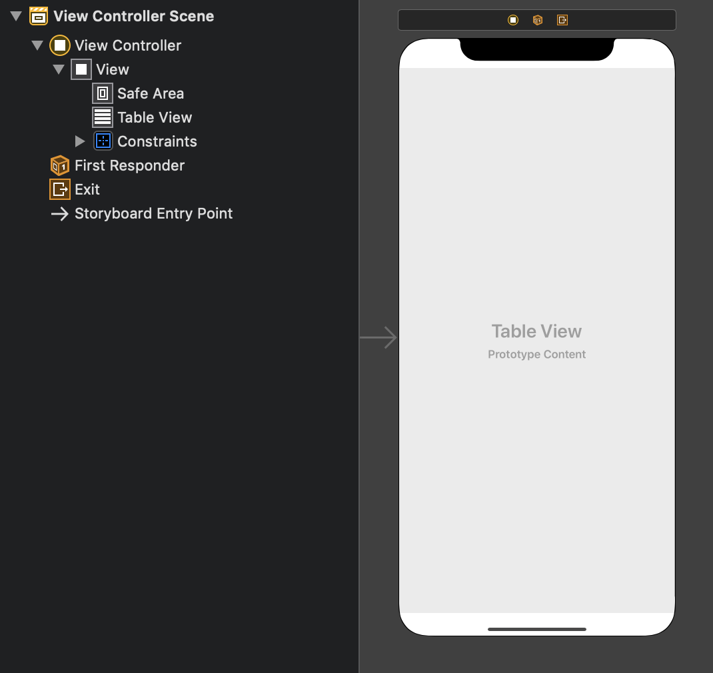
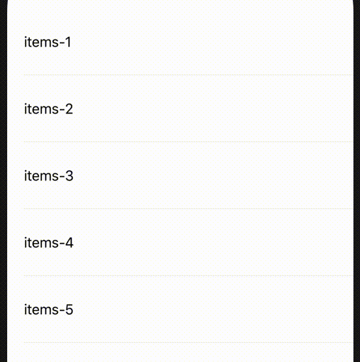

目標
スワイプしたら削除されるテーブルを作る。
準備
TableViewに最低限の設定をしておく。
Main.storyboardを次のようにする。

ViewController.swiftの内容を以下のようにする。
class ViewController: UIViewController {
@IBOutlet weak var tableView: UITableView!
var items = ["Item1", "Item2", "Item3", "Item4", "Item5"]
override func viewDidLoad() {
super.viewDidLoad()
// Do any additional setup after loading the view.
tableView.dataSource = self
tableView.delegate = self
}
}
extension ViewController: UITableViewDataSource {
func tableView(_ tableView: UITableView, numberOfRowsInSection section: Int) -> Int {
items.count
}
func tableView(_ tableView: UITableView, cellForRowAt indexPath: IndexPath) -> UITableViewCell {
let cell = tableView.dequeueReusableCell(withIdentifier: "testCell")!
cell.textLabel?.text = items[indexPath.row]
return cell
}
}
スワイプしたらボタンが出る処理
次のメソッドを実装する。
func tableView(_ tableView: UITableView, trailingSwipeActionsConfigurationForRowAt indexPath: IndexPath) -> UISwipeActionsConfiguration? {
let destructiveAction = UIContextualAction(style: .destructive, title: "") { (action, view, completionHandler) in
self.items.remove(at: indexPath.row)
tableView.deleteRows(at: [indexPath], with: .automatic)
completionHandler(true)
}
destructiveAction.backgroundColor = .systemPink
destructiveAction.image = UIImage(systemName: "trash.fill")
let configuration = UISwipeActionsConfiguration(actions: [destructiveAction])
return configuration
}
説明
func tableView(_,trailingSwipeActionsConfigurationForRowAt)によって、スワイプ時のボタンの設定を行える。trailingSwipeActionsConfigurationForRowAtの部分をleadingSwipeActionsConfigurationForRowAtにすると、右スワイプに対応できる。
スワイプすると出てくるボタン自体はUIContextualActionで設定する。コンストラクタ引数は以下の通り。
style: .normalか.destructiveが選択可能。.destructiveにすると、セル削除時のアニメーションがいい感じになる。title: Actionに表示される文字を設定する。completion: Actionが実行されたときの処理を書く。引数は(action, view, completionHandler)を持つ。
action: Action自身view: 実行されたViewcompletionHandler: 実行に成功した時はcompletionHandler(true)、失敗した時はcompletionHandler(false)とする。ドキュメントにはそれしか書いておらず、何のためにそうしなければならないのかわからない。
例えば次のプロパティが設定できる。
image: ボタンの画像を設定。backgroundColor: ボタンの背景色を設定。
最後に、UISwipeActionsConfigurationのコンストラクタにUIContextualActionを設定して、それをreturnで返す。
複数のアクションを設定することも可能で、例えば以下のように書く。
let configuration = UISwipeActionsConfiguration(actions: [destructiveAction, normalAction01, normalAction02])
フルスワイプしたら処理
実はもう実装は終わっている。もともと、フルスワイプによってActionが実行されるように作られている。UISwipeActionsConfigurationのコンストラクタで設定したactionsのうち、先頭のものが実行される仕様になっている。

もしフルスワイプをオフにしたいなら、configurationを次のようにいじる。
configuration.performsFirstActionWithFullSwipe = false
スワイプの程度によって処理を実行
例えばGmailでは、セルの1/4くらい以上スワイプしたときだけアクションが実行されるように作られている。これを実現する方法はないか。
調べ方が悪いのか、解決方法が出てこない。TableViewの標準機能でどうにかなる問題では無さそう。
方法
結局、次の方法を考えることにした。タップ処理を監視して、セルの動きを手作りする。
UIPanGestureRecognizerを各セルに設定して、どのセルの上でどれだけスライドされたかを監視する。- セルをViewで覆う(これをoverlayと呼ぶことにする)。この上に適当なコンテンツを配置する。
UIPanGestureRecognizerによって、overlayを左右に動かす。- セル自身の背景色をピンク色にする。
- セルの上にゴミ箱アイコンを乗せる。
- overlayが1/4以上動かされた時、ゴミ箱アイコンを少し大きくする。
- overlayが1/4以上動かされた状態でタップが離されたとき、行を削除する。
今までやってきた方法と全く異なるため、別プロジェクトで作業する。
Main.storyboard
TableViewだけ配置する。TableViewCellはコードで作るため、ここでは配置しない(部品の配置やサイズの設定が難しかったため)。

TaskCell.swift
先に作っておく。AutoLayoutを一切使っていないのは、ゴミ箱を表示するためのImageViewのサイズを可変にしたいため。ゴミ箱以外については別にAutoLayoutでもよかったかもしれないが、統一性に欠けるので結局使わないことにした。
class TestCell: UITableViewCell {
let trashImage: UIImageView = {
let imageView = UIImageView()
imageView.image = UIImage(systemName: "trash")
imageView.translatesAutoresizingMaskIntoConstraints = false
imageView.tintColor = .white
imageView.contentMode = .scaleAspectFill
return imageView
}()
let overlay: UIView = {
let view = UIView()
view.translatesAutoresizingMaskIntoConstraints = false
view.backgroundColor = .white
return view
}()
let label: UILabel = {
let label = UILabel()
label.text = ""
label.translatesAutoresizingMaskIntoConstraints = false
return label
}()
override init(style: UITableViewCell.CellStyle, reuseIdentifier: String?) {
super.init(style: style, reuseIdentifier: reuseIdentifier)
self.backgroundColor = .systemPink
overlay.addSubview(label)
self.addSubview(trashImage)
self.addSubview(overlay)
}
required init?(coder: NSCoder) {
fatalError("init(coder:) has not been implemented")
}
override func didAddSubview(_ subview: UIView) {
super.didAddSubview(subview)
overlay.frame = CGRect(x: 0, y: 0, width: self.frame.width, height: self.frame.height)
label.frame = CGRect(x: 20, y: 0, width: overlay.frame.width-20, height: overlay.frame.height)
trashImage.layer.anchorPoint = CGPoint(x: 0, y: 0.5)
updateTrashSize(20)
}
func updateTrashSize(_ s: CGFloat) {
trashImage.frame = CGRect(x: 0, y: 0, width: s, height: s)
trashImage.layer.position.x = self.frame.width - s
trashImage.layer.position.y = 40
}
override func awakeFromNib() {
super.awakeFromNib()
// Initialization code
}
override func setSelected(_ selected: Bool, animated: Bool) {
super.setSelected(selected, animated: animated)
// Configure the view for the selected state
}
}
ViewController.swift
次の点に注目。
- コード上でTableCellを登録するときは
tableView.registerを利用する。
- Gestureを監視するためには
view.addGestureRecognizerを利用する。
UIPanGestureRecognizerは位置(location)だけでなく、どれだけ動かしたか(translation)、という情報が得られる。タップ状態はstateプロパティで調べる。
panChangedとpanEndedメソッドがごちゃごちゃしている。リファクタリングの余地があるかも。
class ViewController: UIViewController {
@IBOutlet weak var tableView: UITableView!
private var items = ["items-1", "items-2", "items-3", "items-4", "items-5"]
override func viewDidLoad() {
super.viewDidLoad()
// Do any additional setup after loading the view.
tableView.register(TestCell.self, forCellReuseIdentifier: "testCell")
tableView.dataSource = self
}
}
extension ViewController: UITableViewDataSource {
func tableView(_ tableView: UITableView, numberOfRowsInSection section: Int) -> Int {
return items.count
}
func tableView(_ tableView: UITableView, cellForRowAt indexPath: IndexPath) -> UITableViewCell {
let cell = tableView.dequeueReusableCell(withIdentifier: "testCell") as! TestCell
cell.addGestureRecognizer(UIPanGestureRecognizer(target: self, action: #selector(cellPanned(_:))))
cell.label.text = items[indexPath.row]
return cell
}
@objc func cellPanned(_ sender: UIPanGestureRecognizer) {
switch sender.state {
case .began:
panBegan(sender)
case .changed:
panChanged(sender)
case .ended:
panEnded(sender)
default: break
}
}
func panBegan(_ sender: UIPanGestureRecognizer) {
// 必要なら何か処理を書く
}
func panChanged(_ sender: UIPanGestureRecognizer) {
let cell = sender.view as! TestCell
let x = cell.layer.position.x
let dx = sender.translation(in: self.view).x
if dx < 0 {
cell.overlay.layer.position.x = x + dx
}
if abs(dx) > cell.frame.width / 4 {
UIView.animate(withDuration: 0.2,
delay: 0,
options: .curveEaseOut,
animations: {
cell.updateTrashSize(50)
}, completion: nil)
}
}
func panEnded(_ sender: UIPanGestureRecognizer) {
let cell = sender.view as! TestCell
let dx = sender.translation(in: self.view).x
if abs(dx) > cell.frame.width / 4 {
UIView.animate(withDuration: 0.2,
delay: 0,
options: .curveEaseOut,
animations: {
cell.overlay.layer.position.x = -cell.overlay.frame.width
}, completion: nil)
let indexPath = self.tableView.indexPath(for: cell)!
self.items.remove(at: indexPath.row)
self.tableView.deleteRows(at: [indexPath], with: .none)
} else {
UIView.animate(withDuration: 0.2,
delay: 0,
options: .curveEaseOut,
animations: {
cell.overlay.layer.position.x = cell.layer.position.x
cell.updateTrashSize(10)
}, completion: nil)
}
}
}
動きがいまいち自然でないが、一応それっぽいものはできた。

参考文献